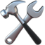
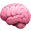
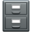
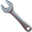
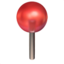

C
C & systémové programování
Praktické projekty zaměřené na nízkoúrovňový a embedded vývoj a čitelný kód.
- Práce se soubory Hotovo
- Parsování logů Hotovo
- Správa paměti Probíhá
- Embedded vývoj Další
Student softwarového inženýrství na SŠ DELTA Pardubice a člen Mensy ČR. Baví mě řešit problémy, rozumět technologiím do hloubky a přetvářet nápady ve fungující projekty.
Zajímá mě, co se děje pod kapotou – od správy paměti v C až po backend v Pythonu.
Software Engineering Student
Jsem student softwarového inženýrství na SŠ DELTA – Střední škola informatiky a ekonomie v Pardubicích a člen Mensy ČR (od 04/2025).
Nejvíc mě táhne systémové programování: parsování logů, práce se soubory a ruční správa paměti v C. Míří to k nízkoúrovňovému a embedded vývoji – a vždy s důrazem na čitelný kód.
Vedle toho vyvíjím hry v C# zaměřené na logiku a herní mechaniky a stavím webové stránky pro procvičování matiky a programování pro základní školy.

Co stavím
Jak k tomu přistupujiTři směry, kterým se právě věnuji – s průběžným stavem.
Praktické projekty zaměřené na nízkoúrovňový a embedded vývoj a čitelný kód.
Vlastní projekty zaměřené na logiku a herní mechaniky, verzované přes Git a GitHub.
Nové webové stránky na procvičení matiky a programování pro žáky základních škol.
Nástroje a oblasti, se kterými denně pracuji.
Hlavní důraz na C a Python, C# pro hry.
Jak software opravdu pracuje s pamětí a soubory.

BackendLogika na straně serveru a automatizace v Pythonu.

NástrojeVerzování a vývojové prostředí.
Každý projekt prochází stejnými kroky – jako když program prochází kompilací.
Rozebrat problém a ujasnit si, co má výsledek dělat.
Zvolit datové struktury, architekturu a nástroje.
Psát čitelný kód a průběžně commitovat do Gitu.
Hledat chyby, úniky paměti a hraniční případy.
Zdokumentovat, vylepšit a naučit se něco nového.
Jsem otevřen juniorním stážím a brigádám v IT (C nebo Python), freelance zakázkám a spolupráci na zajímavých projektech.

LokalitaChoceň · Pardubice · remote